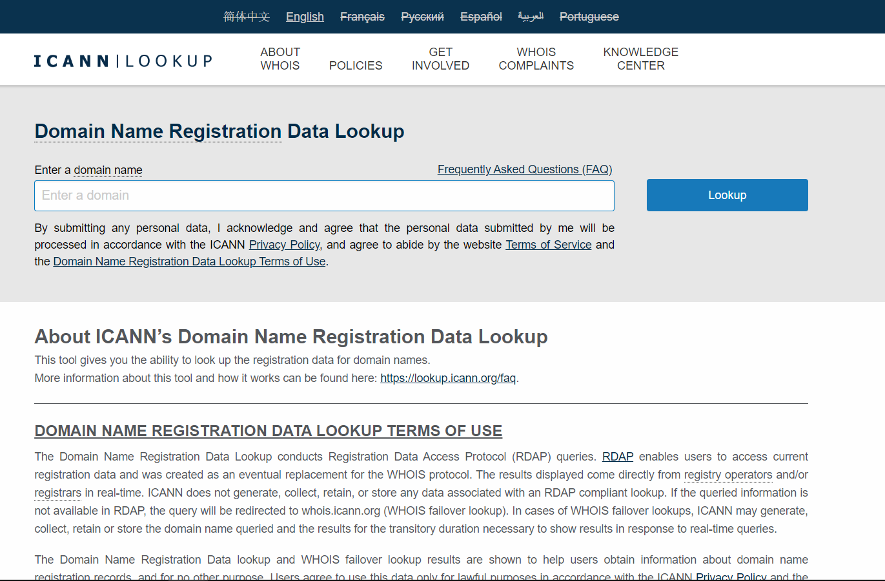

10.2.1 Descripción general de DNS
Cuando tan a menudo nos conectamos a servidores web usando nombres como www.cisco.com, esto ocurre mediante la asignación de direcciones IP a los paquetes. En Internet, estos nombres de dominio son mucho más fáciles de recordar para las personas que una dirección IP como 74.163.4.161. Si Cisco decide cambiar la dirección numérica de www.cisco.com, esto no afecta al usuario, porque el nombre de dominio se mantiene. Simplemente se une la nueva dirección al nombre de dominio existente y se mantiene la conectividad.
El sistema de nombres de dominio (DNS) se desarrolló para proporcionar un medio confiable de administrar y proporcionar los nombres de dominio y sus direcciones IP asociadas. El sistema de DNS se compone de una jerarquía global de servidores distribuidos que contienen bases de datos con asignaciones de nombre para las direcciones IP. En la figura, el cliente envía una solicitud al servidor DNS para obtener la dirección IP para www.cisco.com y así puede direccionar paquetes al servidor.
En un análisis reciente de las amenazas de seguridad de la red se descubrió que más del 90% de los software maliciosos se aprovechan del uso del sistema DNS para realizar campañas de ataques de red. Un analista de ciberseguridad debe tener un conocimiento profundo del sistema DNS y las maneras en que se puede detectar el tráfico malicioso de DNS mediante análisis de protocolo e inspección de información de monitoreo del DNS. Además, el malware suele ponerse en contacto con los servidores de comando y control mediante DNS. Esto hace que las URL del servidor sean indicadores de compromiso para vulnerabilidades específicas.
DNS resuelve nombres en direcciones IP

10.2.2 La jerarquía del dominio del DNS
El DNS se compone de una jerarquía de dominios genéricos de nivel superior (gTLD) que consta de .com, .net, .org, .gov, .edu y numerosos dominios de país, como .es (España), .uk (Reino Unido), .br (Brasil), etc. En el siguiente nivel de la jerarquía de DNS, están los dominios de segundo nivel. Estos están representados por un nombre de dominio seguido de un dominio de nivel superior. Los subdominios se encuentran en el siguiente nivel de la jerarquía de DNS y representan una división del dominio de segundo nivel. Por último, un cuarto nivel puede representar un host en un subdominio. Cada elemento de una especificación de dominio suele denominarse etiqueta. Las etiquetas se mueven desde la parte superior de la jerarquía hacia abajo, de derecha a izquierda. Un punto (.) al final de un nombre de dominio representa el servidor de raíz de la parte superior de la jerarquía. En la figura, se ejemplifica esta jerarquía de dominio de DNS.
Los diferentes dominios de primer nivel representan el tipo de organización o el país de origen. Algunos ejemplos de dominios de nivel superior son los siguientes:

10.2.3 El proceso de búsqueda de DNS
Para entender el DNS, los analistas de ciberseguridad deben estar familiarizados con los siguientes términos:
Al intentar resolver la dirección IP de un nombre, un host del usuario, conocido en el sistema como una resolución, primero comprobará su caché de DNS local. Si la asignación no se encuentra allí, se emitirá una consulta al servidor o a los servidores DNS que estén configurados en las propiedades de direccionamiento de red de la resolución. Estos servidores pueden estar presentes en una empresa o ISP. Si la asignación no se encuentra allí, el servidor DNS realiza la consulta en otros servidores DNS de mayor nivel autorizados para el dominio de nivel superior a fin de encontrar la asignación. Este proceso se denomina consulta recursiva.
Debido a la posible carga en los servidores de dominio de nivel superior autorizados, algunos servidores DNS en la jerarquía mantienen cachés de todos los registros de DNS que han resuelto durante un período específico. Estos servidores DNS de caché pueden resolver consultas recursivas sin reenviarlas a servidores de nivel superior. Si un servidor requiere datos para una zona, solicitará una transferencia de datos de un servidor autorizado para esa zona. El proceso de transferir bloques de datos de DNS entre servidores se conoce como transferencia de zona.

Haga clic en cada botón para revisar los pasos relacionados con la resolución DNS.
Paso 1
El usuario escribe un FQDN en un campo Dirección de aplicación del explorador.

Paso 2
Se envía una consulta DNS al servidor DNS designado para el equipo cliente.

Paso 3
El servidor DNS coincide con el FQDN con su dirección IP.

Paso 4
La respuesta de consulta DNS se envía de nuevo al cliente con la dirección IP del FQDN.

Paso 5
El equipo cliente utiliza la dirección IP para realizar solicitudes del servidor.

10.2.4 Formato de mensaje DNS
DNS utiliza el puerto UDP 53 para las consultas y respuestas de DNS. Las consultas de DNS se originan en un cliente y las respuestas se emiten desde servidores DNS. Si una respuesta de DNS excede los 512 bytes, como por ejemplo cuando se usa DNS dinámico (DDNS), el mensaje se manipula a través del puerto TCP 53. Incluye el formato de consultas, respuestas y datos. Las comunicaciones del protocolo DNS utilizan un único formato llamado “mensaje”. Este formato de mensaje que se ve en la figura se utiliza para todos los tipos de solicitudes de clientes y respuestas del servidor, para los mensajes de error y para la transferencia de información de registro de recursos entre servidores.
El servidor DNS almacena los diferentes tipos de RR utilizados para resolver nombres. Estos registros contienen el nombre, la dirección y el tipo de registro. Esta es una lista de algunos de estos tipos de registros:
Cuando un cliente realiza una consulta, el proceso DNS del servidor observa primero sus propios registros para resolver el nombre. Si no puede resolverlo con los registros almacenados, contacta a otros servidores para hacerlo. Una vez que se encuentra una coincidencia y se la devuelve al servidor solicitante original, este almacena temporalmente la dirección numerada por si se vuelve a solicitar el mismo nombre.
El servicio del cliente DNS en los equipos Windows también almacena los nombres resueltos previamente en la memoria. El comando ipconfig /displaydns muestra todas las entradas de DNS en caché.

Como se muestra en la figura, este formato de mensaje se utiliza para todos los tipos de solicitudes de clientes y respuestas del servidor, para los mensajes de error y para la transferencia de información de registro de recursos entre servidores. La tabla describe cada sección.
| Sección de mensajes DNS | Descripción |
|---|---|
| Pregunta | La pregunta para el servidor. Contiene el nombre de dominio que se resolverá, la clase de dominio y el tipo de solicitud. |
| Respuesta | El registro de recursos de DNS (RR) para la consulta. La resolución de la dirección IP depende del tipo de RR. |
| Autoridad | Contiene los registros de recursos para la autoridad del dominio. |
| Adicional | Relevante únicamente para las respuestas de consulta. Contiene información adicional que hace más eficiente la resolución. |
10.2.5 DNS dinámico
DNS requiere que los registradores acepten y distribuyan las asignaciones de DNS de las organizaciones que deseen registrar asignaciones de nombre de dominio y dirección IP. Después de crear la asignación inicial (un proceso que puede demorar 24 horas o más), es posible realizar cambios en la dirección IP que se asigna al nombre de dominio poniéndose en contacto con el registrador o usando un formulario en línea para efectuar el cambio. Sin embargo, debido al tiempo que demora este proceso y la distribución de la nueva asignación en el sistema de nombres de dominio, pueden transcurrir horas hasta que la nueva asignación esté disponible para las resoluciones. En situaciones en las que un ISP utiliza DHCP para proporcionar direcciones a un dominio, es posible que la dirección que se asigna al dominio caduque y el ISP otorgue una nueva. Esto daría lugar a una interrupción de conectividad al dominio mediante DNS. Un nuevo enfoque era necesario para permitir que las organizaciones realicen cambios rápidos en la dirección IP asignada a un dominio.
DNS dinámico (DDNS) le permite a un usuario u organización registrar una dirección IP con un nombre de dominio, al igual que en DNS. Sin embargo, cuando cambia la dirección IP de la asignación, la nueva asignación puede propagarse en el DNS casi instantáneamente. Para que esto ocurra, un usuario obtiene un subdominio de un proveedor de DDNS. Ese subdominio se asigna a la dirección IP del servidor o la conexión doméstica de router a Internet del usuario. El software cliente se ejecuta en el router o en una computadora host que detecta un cambio en la dirección IP de Internet del usuario. Cuando se detecta un cambio, se informa al proveedor de DDNS inmediatamente y la asignación entre el subdominio del usuario y la dirección IP de Internet se actualiza inmediatamente, como se ve en la figura. DDNS no utiliza una verdadera entrada de DNS para la dirección IP de un usuario. En cambio, actúa como intermediario. El dominio del proveedor de DDNS está registrado con el DNS, pero el subdominio se asigna a una dirección IP completamente distinta. El servicio del proveedor de DDNS suministra esa dirección IP al servidor DNS de segundo nivel de la resolución. Ese servidor DNS, ya sea en la organización o en el ISP, proporciona la dirección IP de DDNS para la resolución.
Los atacantes pueden abusar de DNS dinámico de varias maneras. Los servicios gratuitos de DDNS son especialmente útiles para los atacantes. DDNS se puede utilizar para facilitar el cambio rápido de la dirección IP de los servidores de comando y control de malware después de que la dirección IP actual se haya bloqueado ampliamente. De esta manera, el malware se puede codificar con una URL en lugar de una dirección IP estática. DDNS también se puede utilizar como una forma de ex-filtrar datos desde dentro de una red porque el tráfico DNS es muy común y con frecuencia se considera benigno. DDNS en sí mismo no es maligno, sin embargo, monitorear el tráfico DNS que va a servicios DDNS conocidos, especialmente los gratuitos, es muy útil para la detección de vulnerabilidades.

10.2.6 El protocolo WHOIS
WHOIS es un protocolo basado en TCP que se usa para identificar a los propietarios de dominios de Internet a través del sistema de DNS. Cuando un dominio en Internet se registra y asigna a una dirección IP para el sistema de DNS, el registrante debe proporcionar información sobre quién registra el dominio. La aplicación de WHOIS utiliza una consulta en forma de FQDN. La consulta se emite a través de un servicio o una aplicación de WHOIS. El registro oficial de propiedad se le devuelve al usuario mediante el servicio de WHOIS. Esto puede resultar útil para la identificación de los destinos a los que han tenido acceso los hosts en una red. WHOIS tiene limitaciones y los hackers tienen maneras de ocultar su identidad. Sin embargo, WHOIS es un punto de partida para la identificación de ubicaciones de Internet potencialmente peligrosas a las que se puede haber llegado mediante la red. Un servicio WHOIS basado en Internet se denomina ICANN Lookup se puede utilizar para obtener el registro de registro una URL. Otros servicios de WHOIS son mantenidos por registros regionales de Internet como RIPE y APNIC.

10.2.7 Práctica de laboratorio - Utilizar Wireshark para examinar una captura DNS de UDP
En esta práctica de laboratorio, establecerá comunicación con un servidor DNS enviando una consulta de DNS mediante el protocolo de transporte UDP. Utilizará Wireshark para examinar los intercambios de consulta y respuesta de DNS con el mismo servidor.